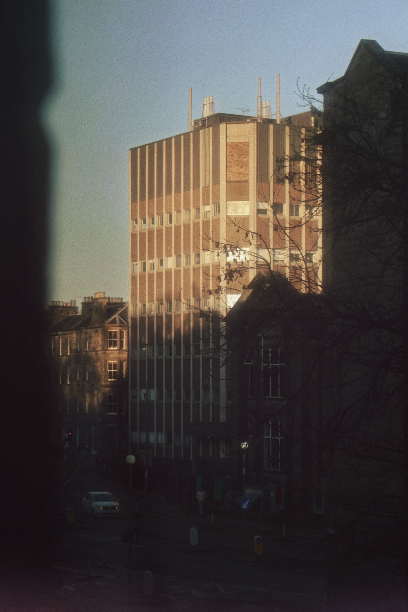

低日照窗
02/01/2025
这组照片拍摄于大二圣诞假期。我一个人待在爱丁堡的公寓里，很多天几乎没有出门，只是在房间里做自己的事情，偶尔从窗边看见冬天很短的日落。
这些画面都来自同一个生活半径。窗户、楼体、树枝、远处的天空，还有一小段很快消失的金色光线。它们像假期里被困在室内时，日子偶然露出的边缘。
冬天的太阳来得很低，也走得很快。它没有真正照亮什么，只是在房间外面停留了一会儿。“即使没有出门，时间也仍然在慢慢经过。” 这样提醒着我
This series was made during my second-year Christmas break, when I spent most days alone in my apartment in Edinburgh. I barely went outside, staying in my room and doing my own things, occasionally catching the small winter sunset from the window.
All of these images come from the same narrow radius of living: windows, buildings, bare branches, distant sky, and a brief strip of golden light. They are not records of an outing, but quiet traces of the outside world reaching the edge of an indoor holiday.
The winter sun arrives low and leaves quickly. It does not really illuminate the room; it only pauses outside for a moment, as if to remind me that time is still passing, even when I have not gone anywhere.
